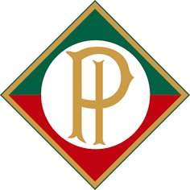

A história do Cruzeiro Esporte Clube remonta ao período de imigração italiana para o Brasil, após a
abolição da escravatura em 1888. Com a Itália enfrentando dificuldades sociais e altas taxas de
desemprego, muitos italianos se aventuraram a cruzar o oceano Atlântico em busca de oportunidades na
América do Sul.
Belo Horizonte, projetada para ser a capital de Minas Gerais e inaugurada em 1897, recebeu cerca de 80 mil
imigrantes italianos. Muitos desses imigrantes trabalharam na construção da nova capital ou nas fazendas da
região. Naquela época, o número de italianos e descendentes na cidade era maior do que o de nativos de
Belo Horizonte.
Com o crescimento da cidade, o interesse pelo futebol aumentou. O Atlético Mineiro foi fundado em 25 de março
de 1908, seguido pelo América, em 30 de abril de 1912. O Palestra, futuro Cruzeiro, surgiu a partir da união de
atletas de outros times da região.
Essa união de jogadores resultou na fundação do Palestra Itália, posteriormente conhecido como Cruzeiro Esporte
Clube. A história do clube se desenvolveu ao longo dos anos, com inúmeros momentos de sucesso e conquistas
notáveis.
Havia jogadores de origem italiana em todos os clubes da capital, mas o Yale, de Aurélio Noce, era o
que concentrava em maior número. Curiosamente, seu uniforme era azul e branco e o seu campo ficava no
bairro do Barro Preto, no quarteirão onde está erguido, atualmente, o fórum da capital. Do Yale saíram
16 jogadores que formariam os primeiros plantéis de titulares e reservas do Cruzeiro.
Os outros jogadores vieram do Atlético, Guarany e Palmeiras, além de atletas sem clube.
O estádio do Barro Preto começou a ser idealizado em 1922. Na ocasião, segundo o
Almanaque do Cruzeiro, o clube recebeu da prefeitura de Belo Horizonte um quarteirão entre as ruas
Guajajaras, Araguari, Juiz de Fora e a Avenida Augusto de Lima (à época denominada Avenida Paraopeba).
A construção das arquibancadas contou com a participação de jogadores, associados e torcedores, que
compunham a classe operária da cidade.
A inauguração oficial do estádio foi em 23 de setembro de 1923, quando o Cruzeiro enfrentou o Flamengo.
As arquibancadas do Barro Preto receberam naquele domingo 4 mil espectadores. Eles assistiram ao então
garoto João Fantoni, o Ninão, de apenas 18 anos, marcar dois gols no empate por 3 a 3.
Com apenas um ano de existência, o Palestra esteve perto de quebrar a hegemonia do América no Campeonato da Cidade (antigo nome do Campeonato Mineiro).
Com 16 pontos, as equipes fizeram jogo extra para definir o título de 1922, pois não havia critério de
desempate no regulamento do torneio. O América ganhou de virada, por 2 a 1, e ficou com a taça.
O primeiro título palestrino veio em 1928, com um ponto de vantagem sobre o vice-campeão, Atlético (28 a 27).
Ninão marcou 43 dos 93 gols da equipe naquela edição.

Além do nome alusivo ao país de origem dos familiares dos fundadores, o Palestra tinha os uniformes
das cores da bandeira italiana: calção branco e camisa verde e vermelha. Tudo começou a mudar a
partir de 1938, quando foi formada a ala renovadora do clube. Uma das propostas era adequar a
identidade em consonância com os símbolos nacionais.
Em 1939, estourou a Segunda Guerra Mundial, que durou até 1945. Em posição contrária à Aliança do Eixo,
formada por Alemanha, Itália e Japão, o governo de Getúlio Vargas decretou em 31 de agosto de 1942 uma lei que
proibia referências às nações inimigas no Brasil.
Em São Paulo, o Palestra Itália virou Palmeiras. Em Minas, a ideia inicial era adotar o nome Ypiranga, o
preferido do presidente Ennes Ciro Poni. Houve quem citasse Yale e Palestra Mineiro. Ganhou, porém, a sugestão
do ex-presidente Oswaldo Pinto Coelho: Cruzeiro Esporte Clube.